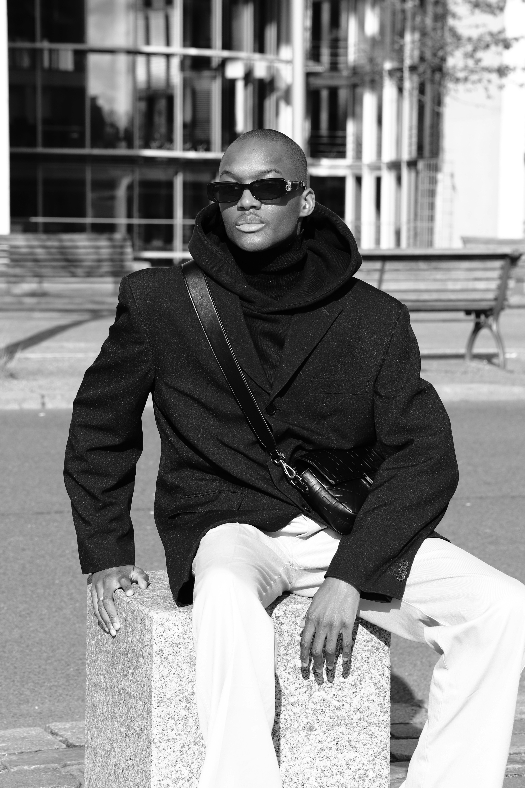

À propos de moi
Je suis un photographe de mode passionné par l'art de capturer des moments uniques. Mon travail se concentre sur les tendances modernes et les portraits créatifs. Avec plus de 10 ans d'expérience, j'ai collaboré avec de grandes marques et des créateurs.
Témoignages
"Un travail magnifique et une passion palpable à chaque photo. Un véritable artiste de la photographie !" - Client satisfait
"Le photographe a su capturer l'essence de notre projet avec une créativité incroyable. Un plaisir de travailler avec lui." - Agence de mode
Mes réalisations
